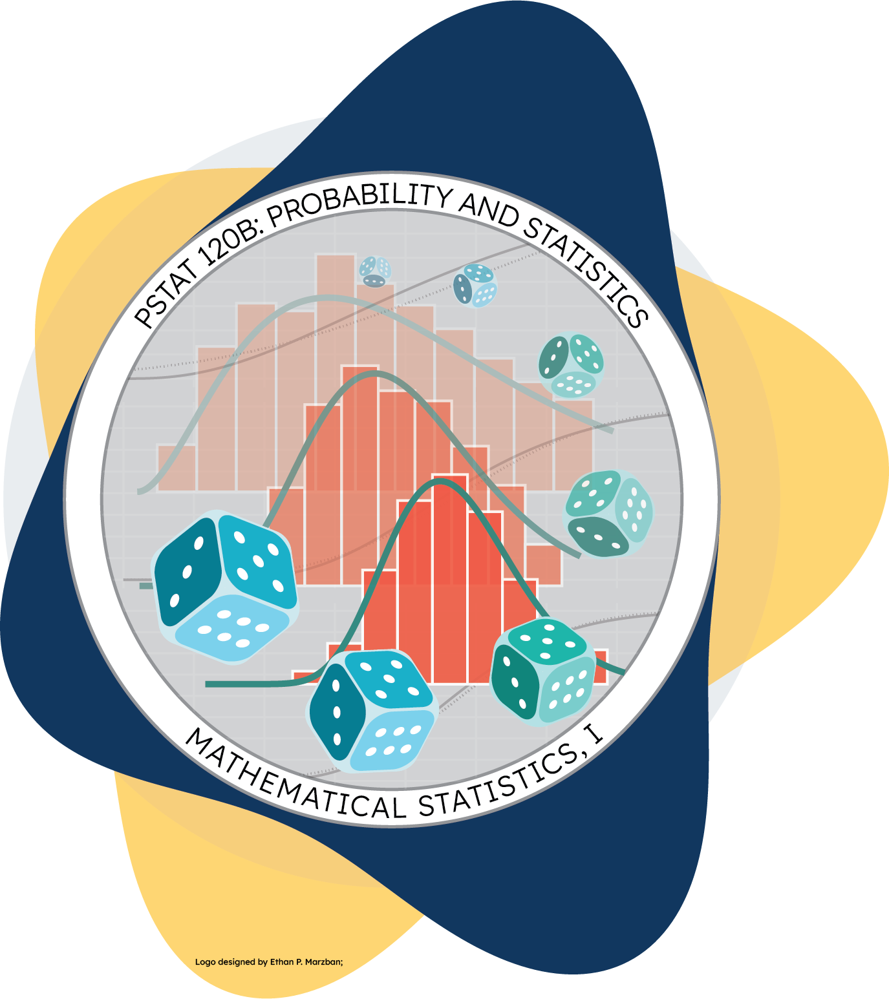

PSTAT 120B, Spring 2025, with Dr. Brian Wainwright
Department of Statistics and Applied Probability; UCSB
April 1, 2025
\[ \newcommand\R{\mathbb{R}} \newcommand{\N}{\mathbb{N}} \newcommand{\E}{\mathbb{E}} \newcommand{\Prob}{\mathbb{P}} \newcommand{\F}{\mathcal{F}} \newcommand{\1}{1\!\!1} \newcommand{\comp}[1]{#1^{\complement}} \newcommand{\Var}{\mathrm{Var}} \newcommand{\SD}{\mathrm{SD}} \newcommand{\vect}[1]{\vec{\boldsymbol{#1}}} \newcommand{\Cov}{\mathrm{Cov}} \usepackage[makeroom]{cancel} \]
Probability Mass Function (PMF): \(p_X(k) := \Prob(X = k)\)
Cumulative Mass Function (CMF): \(F_X(x) := \Prob(X \leq x)\), calculated as \(F_X(x) = \sum_{k \leq x} p_X(k)\)
Expectation: \(\E[X] := \sum_{k} k p_X(k)\)
LOTUS (Law of the Unconscious Statistician): \(\E[g(X)] := \sum_{k} g(k) p_X(k)\)
Variance: \(\Var(X) := \E\left[ (X - \E[X])^2 \right] = \E[X^2] - (\E[X])^2\)
Probability Density Function (PDF): \(f_X(x)\) such that \(\Prob(X \in B) = \int_{B} f_X(x) \ \mathrm{d}x\)
Cumulative Distribution Function (CDF): \(F_X(x) := \Prob(X \leq x)\), calculated as \(F_X(x) = \int_{-\infty}^{x} f_X(t) \ \mathrm{d}t\)
Expectation: \(\E[X] := \int_{\R} x f_X(x) \ \mathrm{d}x\)
LOTUS (Law of the Unconscious Statistician): \(\E[g(X)] := \int_{\R} g(x) f_X(x) \ \mathrm{d}x\)
Variance: \(\Var(X) := \E\left[ (X - \E[X])^2 \right] = \E[X^2] - (\E[X])^2\)
Definition: Moment-Generating Function
The moment-generating function (MGF) of a random variable X is defined as \[ M_X(t) := \E[e^{tX}] \]
Why the name? \(M_X^{(n)}(0) = \E[X^n]\).
Note: for every random variable, \(M_X(0) = 1\). But, it is not always the case that the MGF is continuous at or near zero.
Exercise 1
A random variable X is said to follow the Gamma Distribution with parameters \(\alpha\) and \(\beta\), notated \(X \sim \mathrm{Gamma}(\alpha, \beta)\), if it has density given by \[ f_X(x) = \begin{cases} c \cdot x^{\alpha - 1} e^{-x / \beta} & \text{if } x \geq 0 \\ 0 & \text{otherwise} \\ \end{cases} \] (Note that this might be slightly different than the version of the Gamma distribution you saw in PSTAT 120A.)
viewof alph = Inputs.range(
[0.2, 10],
{value: 2, step: 0.1, label: "α:"}
)
viewof bet = Inputs.range(
[0.2, 3.1],
{value: 1, step: 0.01, label: "β:"}
)jstat = require("jstat")
plt_pdf = Plot.plot({
width: 700,
height: 300,
color: {
legend: true
},
x: {
label: "x",
axis: true
},
y: {
label: "f(x)",
//axis: false,
//domain: [0, d3.max(pdfvals.map(d => d.pdf))]
},
marks: [
Plot.ruleY([0]),
Plot.ruleX([0]),
Plot.line(pdfvals, {x: "x", y: "pdf", stroke : "blue", strokeWidth: 4})
]
})
pdfvals = {
const x = d3.range(0, 12, 0.01);
var pdf;
pdf = x.map(x => ({x: x, pdf: jstat.gamma.pdf(x, alph, bet)}));
return pdf
}
Definition: Normal Distribution
A random variable X is said to follow the normal distribution with parameters \(\mu\) and \(\sigma^2\), notated \(X \sim \mathcal{N}(\mu, \sigma^2)\), if X has density \[ f_X(x) = \frac{1}{\sqrt{2 \pi \sigma^2}} \exp\left\{ - \frac{1}{2 \sigma^2} (x - \mu)^2 \right\} \]
viewof mu = Inputs.range(
[-3, 3],
{value: 0, step: 0.1, label: "µ:"}
)
viewof sig2 = Inputs.range(
[0.1, 8],
{value: 1, step: 0.01, label: "σ²"}
)plt_pdf2 = Plot.plot({
width: 700,
height: 300,
color: {
legend: true
},
x: {
label: "x",
axis: true
},
y: {
label: "f(x)",
//axis: false,
//domain: [0, d3.max(pdfvals.map(d => d.pdf))]
},
marks: [
Plot.ruleY([0]),
Plot.ruleX([0]),
Plot.line(pdfvals2, {x: "x", y: "pdf", stroke : "blue", strokeWidth: 4})
]
})
pdfvals2 = {
const x = d3.range(-6, 6, 0.01);
var pdf;
pdf = x.map(x => ({x: x, pdf: jstat.normal.pdf(x, mu, Math.sqrt(sig2))}));
return pdf
}Exercise 1
Find the MGF of the standard normal distribution.
Tip
A distribution is uniquely determined by the variable part of its PDF.

PSTAT 120B Sp25; Discussion Section 1, © Ethan P. Marzban